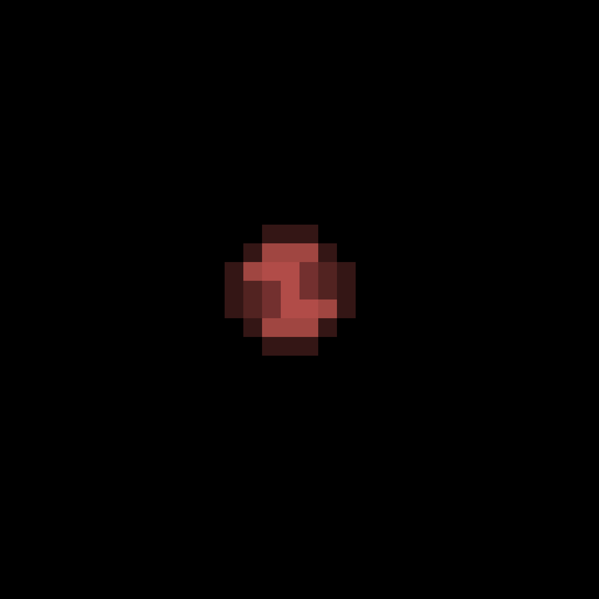

Proxima Centauri d är en stenig planet med en massa som är 74% mindre än jordens. Stjärnan som den kretsar runt (Proxima Centauri) var först upptäckt 1915. Planeten var upptäckt 110 år senare.
Systemet Proxima Centauri ligger bara 4 ljusår från solsystemet, vilket gör det närmaste systemet till oss. Det skulle ta 4 år för att kunna resa till Proxima Centauri om vi reste vid ljusets hastighet.
